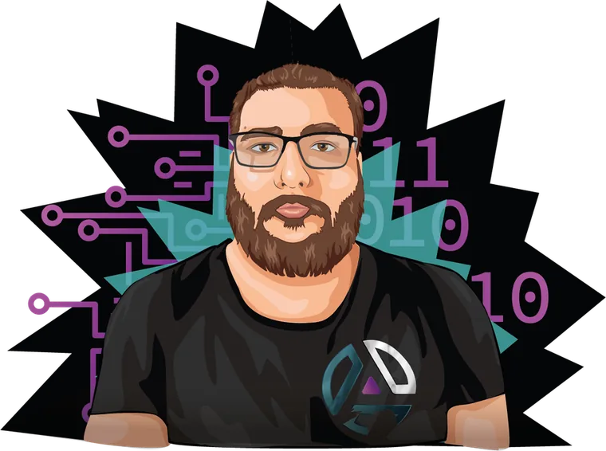

theogalh.dev · Thomas
Senior software engineer. I build small tools that ship.
Python, TypeScript, event-driven backends on GCP and AWS. Ten years in. Everything below runs on my own infrastructure, from the same project framework.

Projects
Each page has a plain-language overview and a full technical section: stack, architecture, decisions, API, deploy.
screenator
python · discord.py · fastapi · redis · websocket
Guess the game from a screenshot. Discord bot and multiplayer web rooms.
Open →screen
fastapi · redis · s3 · cloudflare · canvas
Drop a screenshot, annotate it, share a link. Public or private.
Open →ytp
fastapi · yt-dlp · redis · sse · mcp
Paste a video URL, pick a format, trim, download. Also an MCP server.
Open →theoproject
python · click · uv · github actions · systemd
The CLI that scaffolds every project here, deploy included.
Open →guess
fastapi · redis pub/sub · sse · jinja2
Party game. One question, secret answers, guess who wrote what.
Open →bbc
fastapi · sqlite · elo · sse · tailwind
Fighting game leaderboard. Elo across 2XKO, SF6 and Tekken 8, plus tournaments.
Open →theoapi
fastapi · sqlite · oauth · rbac · jinja2
One account for every app. Login, roles, admin console.
Open →